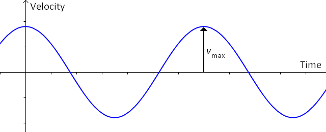
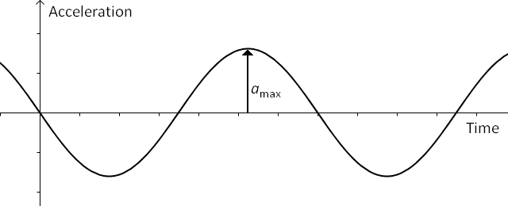

Simple Harmonic Motion
Simple harmonic motion is an oscillation where the motion of the object is described exactly by a sine-shaped function.

- SHM occurs near an equilibrium when the restoring force is directly proportional to the object’s position, measured relative to equilibrium.
- We will sometimes use the symbol \(\vec{\mathbf{x}}\) to represent the position relative to equilibrium, rather than \(\vec{\mathbf{d}}\) for position relative to an arbitrary origin.
- The relationship between the restoring force and position can be described by the equation: $$\vec{\mathbf F}_{net} = -k\vec{\mathbf x}$$
SHM Graphs
- The object’s velocity and position are “out of sync” with each other in SHM: when the object is furthest from equilibrium (the highest and lowest points of the \(\vec{\mathbf{x}}-t\) graph) the velocity is zero and when the object passes through equilibrium its speed is a maximum.

- This can be understood in terms of energy conservation: kinetic energy (related to speed) is at a maximum when potential energy (related to distance from equilibrium) is at a minimum.
- One interesting property of sinusoidal functions is that the slope will also be sinusoidal but shifted by one-quarter of a period!
- If the \(\vec{\mathbf{x}}-t\) graph can be described by a sine function, the \(\vec{\mathbf{v}}-t\) graph will be a cosine function and the \(\vec{\mathbf{a}}-t\) graph will be a negative sine function.

SHM Equations
All three motion graphs have the same time scale (period).
The vertical scales of the three motion graphs are related by the following relationships:
$$v_{max} ={2\pi A\over T}$$
$$a_{max} = {v_{max}^2 \over A} = {4\pi^2 A\over T^2}$$
- The proof of these equations requires calculus; however, we can demonstrate experimentally that these relationships are correct.
Example
A simple pendulum is constructed so that it will have a period of 2.00 seconds and a maximum acceleration of 0.500 m/s2. Assuming the motion is SHM, calculate the speed of the mass as it passes through equilibrium and the amplitude of the motion.
Since we know the period and maximum acceleration, we can find the amplitude from the \(a_{max}\) equation above: $$a_{max} = {4\pi^2 A\over T^2}$$
$$a_{max}T^2 = 4\pi^2 A$$
$${a_{max}T^2 \over 4\pi^2} = A$$
Evaluating:$$A = \mathrm{{(0.500\ m/s^2) (2.00\ s)^2 \over 4\pi^2} = 0.0507\ m}$$
We can then calculate \(v_{max}\) from the other equation: $$v_{max} = {2\pi A \over T} = \mathrm{{2\pi (0.0507\ m) \over (2.00\ s)} = 0.159\ m/s}$$